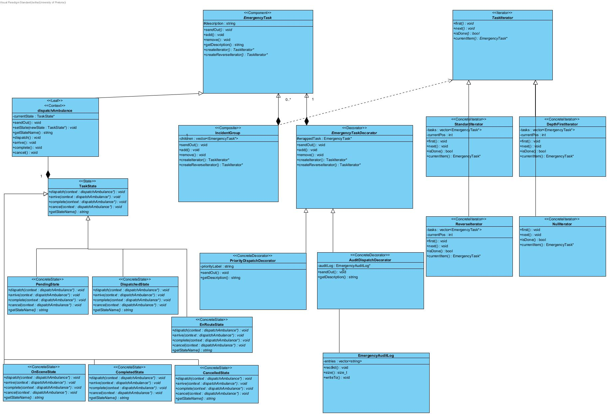
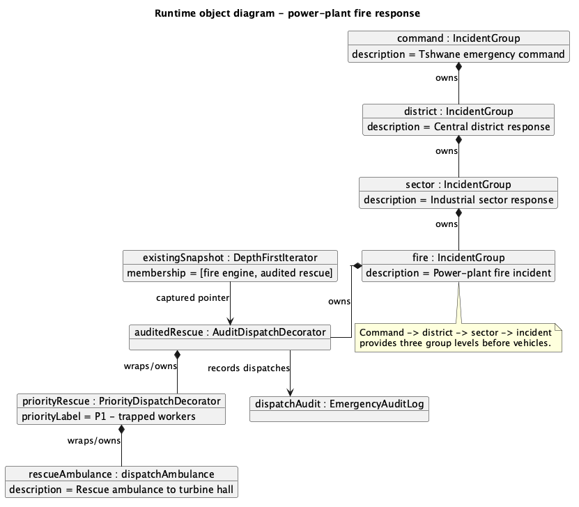
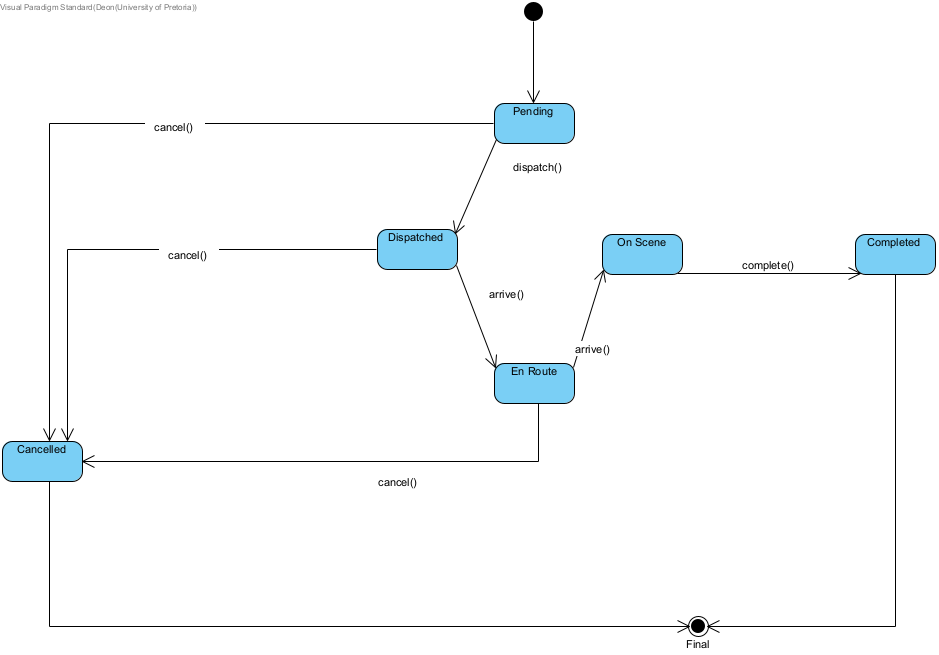
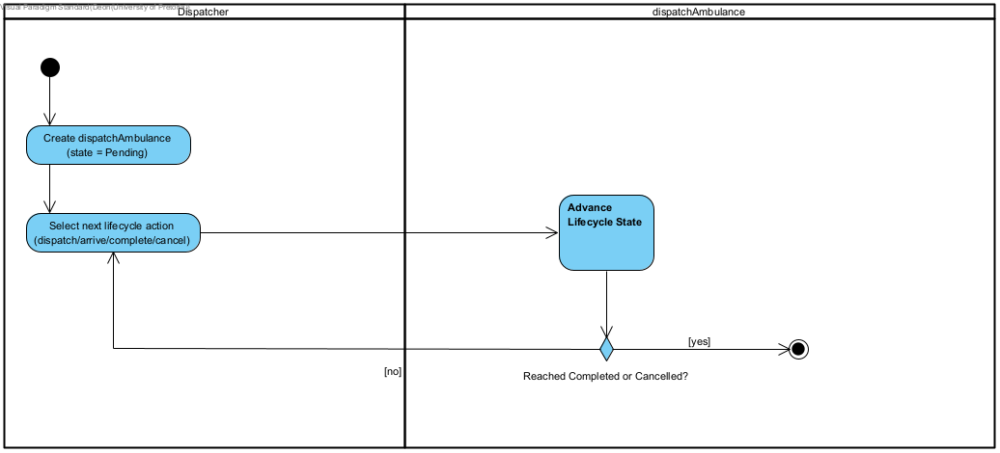
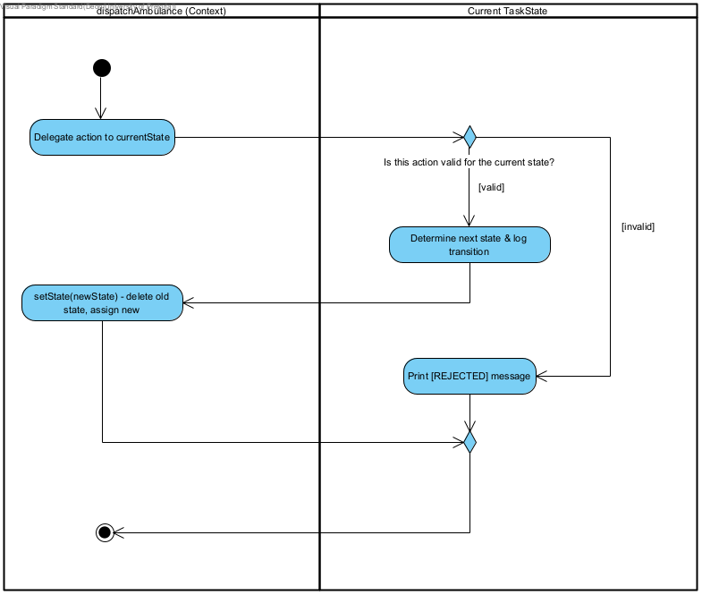

COS 214 Practical 4
TaskForge
Hierarchical emergency-response processing using Composite, Iterator, State and Decorator.
System description
TaskForge models emergency-response management across a city. A command structure can contain districts, sectors, incidents and individual response vehicles. The hierarchy lets a dispatcher treat one vehicle and an entire incident group through the same EmergencyTask abstraction.
The system addresses four operational needs: recursive dispatch across nested teams; independent views of active work; a controlled ambulance lifecycle with rejected invalid actions; and optional responsibilities such as priority handling and audit logging that can be stacked at runtime.
Command -> district -> sector -> incident -> vehicle.
Complete depth-first snapshots and reverse direct-unit views.
Pending through Completed or Cancelled, with invalid actions rejected.
Priority and audit decorators remain usable as EmergencyTask objects.
Team
Submission date: 8 September 2026 | Repository: github.com/Riti-Botha/COS-214-Practical-4
Task 1 - Design
Gang of Four participant mapping
| Pattern | Participant | TaskForge class |
|---|---|---|
| Composite | Component | EmergencyTask |
| Composite | Leaf | dispatchAmbulance |
| Composite | Composite | IncidentGroup |
| Iterator | Iterator | TaskIterator |
| Iterator | ConcreteIterator | DepthFirstIterator, ReverseIterator, StandardIterator, NullIterator |
| Iterator | Aggregate | EmergencyTask |
| Iterator | ConcreteAggregate | IncidentGroup, dispatchAmbulance |
| Decorator | Component | EmergencyTask |
| Decorator | Decorator | EmergencyTaskDecorator |
| Decorator | ConcreteDecorator | PriorityDispatchDecorator, AuditDispatchDecorator |
| State | Context | dispatchAmbulance |
| State | State | TaskState |
| State | ConcreteState | PendingState, DispatchedState, EnRouteState, OnSceneState, CompletedState, CancelledState |
Runtime collaboration
IncidentGroup recursively owns other groups or leaves. Its factory methods create traversal objects without exposing the internal vector to the client. A leaf delegates lifecycle actions to its current TaskState. Decorators wrap any task while preserving the EmergencyTask interface.
Coherent application: the patterns meet in the runtime scenarios rather than being run as four isolated examples. Decorated vehicles live inside the composite, are discovered by iterators and participate in normal dispatch behavior; a dedicated lifecycle scenario demonstrates State transitions.
Task 1 - Complete UML
UML class diagram

Task 1 - Design rationale
Relationships, multiplicities and ownership
Composite hierarchy
IncidentGroup composes zero or more EmergencyTask children (1 to 0..*). It owns each child exclusively, deletes all remaining children in its destructor and deletes an item when remove() is called. dispatchAmbulance and IncidentGroup inherit publicly from the abstract component, so client code can dispatch a leaf or a whole nested incident uniformly.
Decorator ownership
EmergencyTaskDecorator composes exactly one wrapped task (1 to 1) and deletes it. This makes stacked decorators recursively self-cleaning. AuditDispatchDecorator instead holds a non-owning association to one caller-managed EmergencyAuditLog; zero or more audit decorators may share the same log.
State ownership
dispatchAmbulance composes one active TaskState. The context deletes the old State on every transition and deletes the final State in its destructor. Concrete State classes receive the context only as a transient method parameter.
Iterator lifetime
Concrete iterators store non-owning snapshot copies of EmergencyTask* values (1 to 0..*). The aggregate retains ownership of the tasks. Iterator objects returned by the factories transfer to the caller and are managed with std::unique_ptr<TaskIterator>. Leaves return a NullIterator, allowing traversal code to terminate uniformly without exposing a container.
Removal contract: snapshots preserve membership across additions, but they do not extend pointee lifetime. Because remove() deletes a child, all active iterators are invalidated before a removal; the client must destroy them first and create fresh iterators afterward.
Concrete domain behavior
- The runtime tree contains three nested
IncidentGrouplevels below the command root before reaching response vehicles. DepthFirstIteratorvisits the complete nested structure;ReverseIteratorpresents direct incident units in reverse order; snapshots can coexist independently.PriorityDispatchDecoratoremits an urgency instruction andAuditDispatchDecoratorrecords start/completion entries. They are stacked on rescue and hazmat units.- Six concrete States enforce valid progression and explain rejected lifecycle actions.
Task 4 - Diagram portfolio
UML object diagram

Task 4 - Diagram portfolio
UML state diagram

dispatchAmbulance lifecycle begins in Pending. Valid actions advance through Dispatched, En Route and On Scene to Completed, or cancel before the unit is committed on scene. Completed and Cancelled are terminal states; invalid actions are rejected by the current State object.Task 4 - Activity Diagram 1
Ambulance lifecycle progression

Task 4 - Called activity detail
Advance Lifecycle State

currentState. A valid action selects and installs the next State; an invalid action prints a rejection. The branches merge before returning control to the caller.Task 4 - Activity Diagram 2
Emergency response reconfiguration - Part A
Figure 6A. The incident commander requests a view. TaskForge creates independent snapshots, traverses the hierarchy visibly and dispatches the nested incident in parallel using a fork/join.
Traceability: snapshot creation and the traversal loop map to createIterator(), first(), isDone(), currentItem() and next(); recursive dispatch maps to IncidentGroup::sendOut().
Task 4 - Activity Diagram 2 continued
Emergency response reconfiguration - Part B
Figure 6B. A new hazmat task is created, wrapped first with priority behavior and then audit behavior, and added at runtime. The old snapshot keeps its original membership while a new snapshot sees the addition.
Traceability: the workflow maps directly to scenarioTwo(), including decorator construction, IncidentGroup::add(), the old/new snapshot comparison and the updated dispatch.
Task 4 - Activity Diagram 3
Recursive IncidentGroup dispatch

IncidentGroup::sendOut(). The group loops over its children, skips null entries and calls sendOut() polymorphically. Nested groups repeat the workflow; leaves dispatch a vehicle. This makes the Composite recursion and loop control explicit.Tasks 3 and 4 - Design decisions
Workflow coverage and traversal policy
| Required notation or behavior | Where demonstrated |
|---|---|
| Actions, decisions, guards and merges | Lifecycle called activity; emergency reconfiguration; recursive group dispatch |
| Loops | Lifecycle progression, visible iterator loop and IncidentGroup child loop |
| Fork/join | Emergency-response traversal and nested dispatch branches |
| Called/composite activity | Advance Lifecycle State and its detailed activity |
| Swimlanes | Dispatcher/context, commander/TaskForge and client/group responsibilities |
| Traversal visible in a larger workflow | Emergency-response reconfiguration |
| Lifecycle conditional behavior | State validity decision and rejected-action branch |
Snapshot traversal with invalidation on removal
Each iterator copies task pointers into a private flat vector and advances using currentPos. An iterator already in progress is isolated from additions: it keeps its original membership, while an iterator created afterward captures the updated tree. Multiple iterators can therefore navigate independently.
Removal has a different, deliberate policy. IncidentGroup::remove() immediately deletes the child. Because snapshots are non-owning, a removal invalidates every active iterator. Client code must destroy all active iterators before removal and create fresh iterators afterward. This documented invalidation policy is safe when respected and matches the implementation.
Runtime verification: scenarioTwo() creates an iterator, adds a decorated hazmat unit, proves the old iterator does not see it, then proves a new iterator does. No removal is performed while a snapshot is active.
Task 5 - Engineering investigation
GDB bug investigation
Symptom
During development, a focused ambulance transition test reported 32 bytes definitely lost in four blocks - exactly one leaked TaskState object for each transition performed.
==23== HEAP SUMMARY: ==23== in use at exit: 32 bytes in 4 blocks ==23== LEAK SUMMARY: ==23== definitely lost: 32 bytes in 4 blocks ==23== ERROR SUMMARY: 4 errors from 4 contexts
Cause and GDB evidence
The buggy setState() overwrote currentState without deleting the previous State. GDB was run inside Docker with a breakpoint on dispatchAmbulance::setState. Printing both pointers before stepping showed the original PendingState address being replaced and becoming unreachable.
Breakpoint 1, dispatchAmbulance::setState this=0x609bb706b2b0, newState=0x609bb706c320 $1 = (TaskState *) 0x609bb706b2f0 [original PendingState] $2 = (TaskState *) 0x609bb706c320 [incoming DispatchedState] (next) $3 = (TaskState *) 0x609bb706c320 [currentState after assignment]
Correction and focused verification
void dispatchAmbulance::setState(TaskState* newState) {
delete currentState;
currentState = newState;
}
The focused transition test was rerun after the correction: all eight allocations were freed and Valgrind reported zero errors. The complete source evidence is retained in gdb_valgrind_evidence_BUGGY.log, gdb_valgrind_evidence_BUGGY_gdb.log and gdb_valgrind_evidence_FIXED.log.
Tasks 5 and 6 - Final verification
Docker build and final Valgrind evidence
The final working tree was rebuilt from the supplied ubuntu:24.04 Dockerfile. The image installs g++, make, GDB and Valgrind; make compiles every translation unit with -std=c++11 -g and produces the required taskforge executable.
$ docker build -t taskforge-env . ... RUN make g++ -std=c++11 -g *.cpp -o taskforge Successfully built taskforge-env $ valgrind --leak-check=full --show-leak-kinds=all ./taskforge ==28== HEAP SUMMARY: ==28== in use at exit: 0 bytes in 0 blocks ==28== total heap usage: 247 allocs, 247 frees, 110,317 bytes allocated ==28== All heap blocks were freed -- no leaks are possible ==28== ERROR SUMMARY: 0 errors from 0 contexts (suppressed: 0 from 0)
C++11 Makefile build
Three integrated runtime scenarios
0 bytes in use at exit
0 Valgrind errors
Final evidence recorded on 8 September 2026 in final_valgrind.log. Earlier buggy/fixed State investigation logs are retained separately to preserve the debugging history.
Task 6 - GitHub workflow
Collaboration and contribution statement
Work was divided by pattern and tooling responsibility, then integrated through GitHub. The class diagram was co-created so each pattern shared the same domain model instead of becoming a disconnected example.
Selected repository evidence
| Reference | Contribution | Why it matters |
|---|---|---|
f2e7247 | Riti - Add Makefile | Established the required C++11 build and taskforge target. |
PR #1 / 0bda198 | Merge Member2 | Integrated Deon's isolated State-pattern work into the main design. |
9a4d1bd | Connor - Member 3 Contribution | Integrated Decorator behavior, runtime scenarios, Docker support and Member 3 diagrams. |
237c42c | Deon - GDB/Valgrind evidence | Preserved the genuine buggy run, GDB inspection and corrected verification. |
34a400d | Riti - final evidence assets | Added the third Activity Diagram and Valgrind submission material. |
Individual contributions
- Riti Botha (Member 1): implemented Composite and Iterator, created the recursive dispatch Activity Diagram, prepared memory-check evidence, contributed to the class diagram, Makefile and README.
- Deon Steenkamp (Member 2): implemented State and its valid/invalid transitions, created the State and lifecycle Activity Diagrams, documented the GDB investigation and contributed to the class diagram and report material.
- Connor Human (Member 3): implemented Decorator and the integrated runtime scenarios, created the Dockerfile, object diagram and emergency-response Activity Diagram, documented GoF participants and traversal policy, and assembled the final report.
Integration reflection
The Member2 branch provided a safe workspace for State development and was merged through PR #1. Later commits brought the pattern-specific work and evidence together on main. Final integration focused on traceability: the runtime output, diagrams, ownership policy and debugging evidence now describe the same implementation.